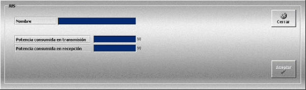

AIS
La creación y edición de equipos AIS se realiza mediante la siguiente ventana.

Esta ventana permite definir los equipos AIS que podrán ser añadidos a las unidades participantes en los Ejercicios.
Para cada equipo AIS se definen los siguientes datos:
Nombre: Nombre del equipo.
Formato: caracteres alfanuméricos.
Potencia consumida en transmisión: Potencia consumida por el equipo durante la transmisión.
Unidades: vatios
Rango: 0.1 - 10000.0
Potencia consumida en recepción: Potencia consumida por el equipo durante la recepción.
Unidades: vatios
Rango: 0.1 - 10000.0
Si la unidad dispone de baterías, la potencia consumida por el equipo AIS se tiene en cuenta para evaluar el tiempo que las baterías pueden alimentar a los diferentes equipos de comunicación de que dispone una unidad.